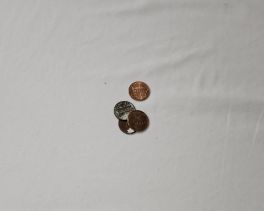
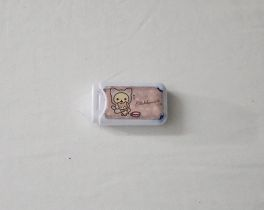
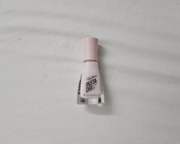
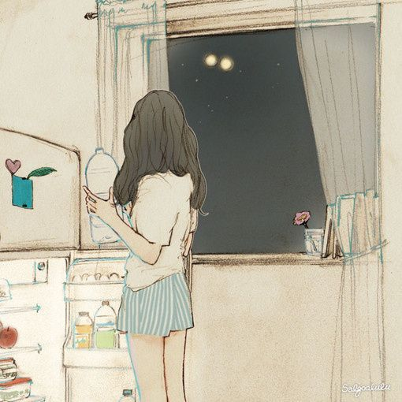

In the oversaturated digital soup of food and fitness blogs, I’m happy to welcome you to my trash-themed one. Each week, I set aside things before they get thrown away and catalog their brief life on this website. It’s a good break from my usual day-in-the-lifes I share on my Instagram stories or pictures of myself I upload to my profile. This feels a bit more personal, more revealing in a strange way. Instead of seeing my life as it happens, you’ll see the remnants and discards.
It’s not a strange concept, if you think about it. Junk Journalling has been a recent trend among creatives, blending aspects of collage and diary-keeping. People would collect trash from their daily lives such as ticket stubs, receipts, and fruit stickers, and collage them into a journal to reflect on. It’s a story told from objects and the ghosts of a memory. This blog does the same thing but in an easily accessible, highly sharable, internet format. I also appreciate the relatability of this topic; we all live in such a highly consumerist society and therefore, produce trash. I hope, as you get to experience my trash of the week, you learn a little about me and in turn, you.
It’s always a little harder to get back into the swing of things in the spring semester. The obstacles of coming from a long winter break, shorter days, and colder weather must be overcome to get going again, things that seem to affect me more than I’d like to admit. However, it does have the advantage of starting in the new year, and January's freshness and feeling of open-faced opportunity provide unparalleled motivation. One of my start-of-semester rituals is cleaning my dorm. It’s a little more serious this semester; our housing contract ends at its conclusion, and we once again must pack up our lives and move out. This, as you can imagine, produces a fair bit of trash which I am excited to share as it differs from my usual collection of receipts and bits of scrap paper.
I was a little afraid of throwing some of these out because they’re such odd objects. I’m not entirely sure if my modes of disposal are correct or in any way eco-friendly, but I wanted them out of my house. I’m glad that writing this blog rightfully shames me for my poor recycling and repurposing habits, but so many things are made so they’re near impossible to throw away nicely. Some things need to be taken apart because only parts of them are redeemable in the extremely inefficient recycling process while others need to be brought to disposal areas that I have no access to whatsoever.
These are all things that have one use, parts of our daily life that we don’t think twice about throwing away. Case in point: the cardboard box my Amazon package came in. It’s a standard small box with the standard paper tape that Amazon uses to seal their packages. I came into possession of it at the beginning of my week. Returning to my dorm after a winter break at my parent’s house means I’m almost guaranteed to forget something that I can’t live without and must place a quick order for it online. Our next object gives a hint to what was shipped inside the box: the plastic wrapping that covered my oil-based cleanser. I wear makeup almost every day and to prevent a terrible breakout, I must painstakingly remove it at the end of the day in an oil-cleansing process. I enjoy this cleanser more than others I’ve tried. This has a thinner consistency and doesn’t reek like tangerines like the one I owned before. It’s a very popular and very affordable brand from Japan, thank you, Kose Softymo speedy cleansing oil. I’m glad for the plastic wrap’s existence as it prevents me from having a terrible unboxing experience if the product ever explodes in transit.
These belong to the subset of items that might have been found at the bottom of a miscellaneous kitchen drawer. These often have a very specific purpose, but the time of use is so infrequent that their biggest use seems to be taking up space. My first item in this category is embarrassingly, a pile of pennies that were laying on my desk for months. I’ve tried so hard to get rid of them, but, in an age where I don’t need to carry my wallet around anymore due to mobile pay, I don’t need pennies. I don’t mind losing four cents of my net worth because vending machines usually don’t take them anymore, and I’d rather not fish through my wallet to hand a cashier four coins while an impatient line forms behind me. I also have absolutely no idea of its origins, but realistically, it must have come from some kind of long-forgotten cash transaction. I was tired of looking at them so they’re going in the garbage. Eyelash glue is my next item in this category. I threw this away because this came with a kit of face jewels that I ordered on the internet for Halloween. Truthfully, I don’t trust this near my eyes. It’s a very small vial with a terrible applicator, included as more of a courtesy rather than to be truly cherished by the recipient. Because I already own a tube of eyelash glue from a company that I trust, I don’t need to hang on to this junk any longer.
Our first is a blue shower speaker my dad gave me before I began university. Regretfully, water may have corroded some internal components causing it to weakly cough up distorted audio. Next is a correction tape I bought from a dollar store called Daiso two years ago to keep in my pencil case. It’s cheaply made, plastic with a cute Rilakkuma branded sticker adorning the front. It’s saved me from many ink-based mistakes and unfortunately, I’m at the end of the roll. I got the next item, a strawberry-scented tube of hand lotion recently. My sister included it in our stockings this Christmas and I used it religiously to combat the damage the dry winter air does to the back of my hands. I finished the tube surprisingly quickly, and I’m currently in search of another tube to carry with me. Similarly, I’m discarding a tube of pale pink nail polish that’s dried up past redemption. Stolen from my older sister’s desk, I’ve used it for a while, the color perfectly suited for every season except fall. Finally, I got to the end of a tube of hair mask. It’s a small bottle that I was gifted, again, for Christmas a year ago. I’m surprised that it lasted me as long as it did. My hair is long and prone to tangling and I’ll miss the help of this hair mask in protecting me from the harsh, hard water my dorm shower emits.
Amazon Prime Cardboard Box

Plastic Wrapping for Oil-based Cleanser
Exactly $0.04 in change

Courtesy eyelash glue

Blue shower speaker
Rilakkuma correction tape

Strawberry scented hand lotion
Pastel pink nail polish

Hair mask
| Item | Weight | Source | Location | Cost | Owned | Mode |
|---|---|---|---|---|---|---|
| Cardboard box | light | Amazon | Mail room | $7.49 | Less than a week | recycle |
| Plastic wrapping | light | Kose Softymo | In original packaging | $9.41 | Less than a week | trash |
| pennies | light | transaction | desk | $0.04 | Few months | trash |
| Eyelash glue | light | Amazon | Nightstand | $6.99 | 3 months | trash |
| speaker | not light | Dad | Shower caddy | $35 | 2.5 years | trash |
| Correction tape | light | Daiso | Pencil case | $1.50 | 2 years | trash |
| lotion | light | Sister | Purse | $0.85 | 1 month | trash |
| Hair mask | light | Sister | Shower caddy | $8.30 | 1 year | trash |
| Nail polish | light | Sister | Desk | $5.99 | 1 year | trash |
This week’s special item is, unfortunately, the shower speaker. It earned this position because it had served me well for so long, it deserves a eulogy. Being gifted this speaker was a bit of a surprise. My dad and I were listening to music together from the extensive home audio system that he set up when I mentioned, offhandedly, how nice it would be to have a speaker to play my music from after I leave for college. My dad stood and disappeared into his room, then reappeared holding a small blue speaker.
I used it the most in my sophomore year of college upon discovering how nice it was to play the Minecraft soundtrack while showering with the lights off. I also chose a song to act as some sort of shower “pregame” as I would always play it right as I started. Now, whenever I hear the song out of context, I think about water. It followed me during the summer to a house I was subleasing during a summer position, serving as a comfort in the thin-walled rental. It met its end last semester because I had used and abused it to its full capacity. Water had ultimately entered the internal components that were marketed as watertight and caused it to sound terrible. After I complained about this to my older sister, she gifted me a beautiful purple shower speaker with instructions to take better care of my belongings. I will, because I missed my shower song. Thank you, “Blue Hour”, by TXT.
The first Bluetooth device , a wireless headset, was developed in 1999 by Ericsson, a Swedish telecommunications company. Following the early 2000s, the first Bluetooth speaker was also produced but it was largely unpopular because of its cost and limited range of use. These were mostly useful for calls and not particularly for playing music. Finally, in the mid-2000s companies such as Bose and JBL produced longer-ranged Bluetooth speakers that were portable and powerful enough to fill an entire room with sound. Devices are rated on an IPXX rating, with the first digit speaking to its dustproofing while the second digit refers to the item’s waterproofness. For electronic devices to be shower-proof, they must have a rating of at least IP65. However, some concerns are raised over the environmental and physical damage that Bluetooth and other electromagnetic radiation-emitting devices may have.

The speaker’s usual place.
Thank you for following along with my trash of the week! As mentioned before, next week will probably include the cup sleeves from numerous matcha lattes as the semester starts to pick up. I appreciate the break from the monotonous food wrappers as this was a chance to see a little bit more of me through some landfill-bound reminiscing. Which was your favorite piece of trash? Did you throw away something I did? See you next time.
My name is Sarah and I've been journaling for as long as I remember. My earliest memories bring me to a composition book diary, the marbled cover hiding terrible handwritings of elementary school gossip. Over the years, I've experiemented with countless forms of journalling. Classic, bullet, and just using a planner were large journaling phases that I somewhat stuck with, until it lead me to junk journalling. By saving physical recipts, ticket stubs, and other ephemera, I glued them into a notebook to save these memories for later in a collage style. Here on this website, I'm yet again, experimenting with another type of journaling. Enjoy!
Image credit: Salgolulu